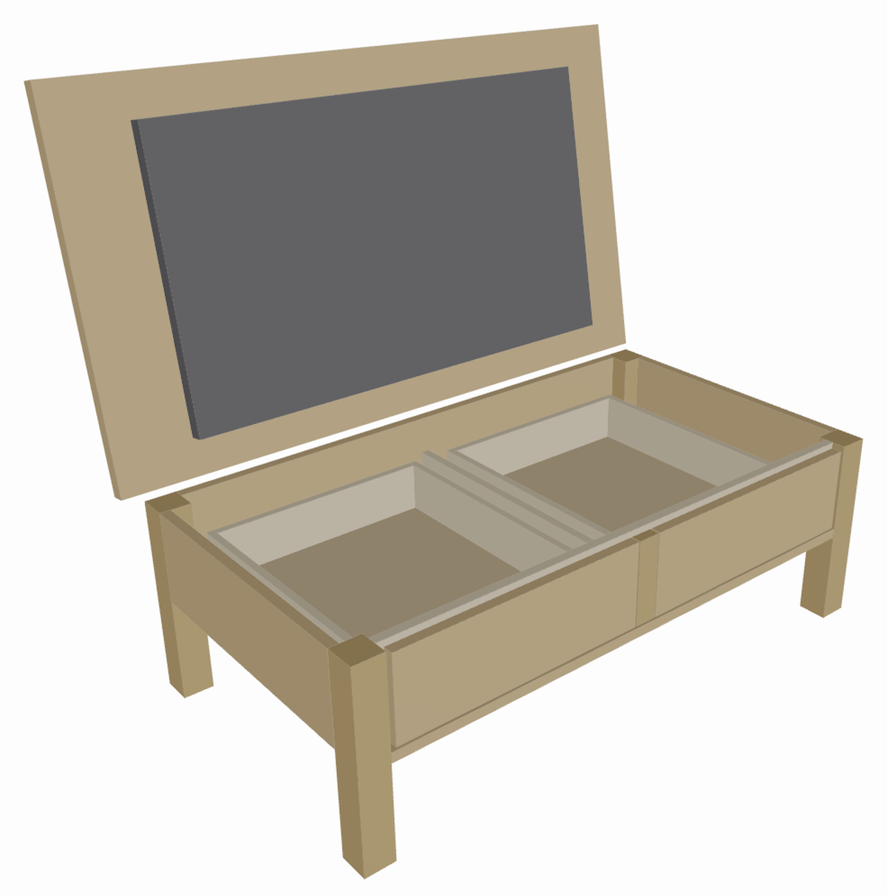
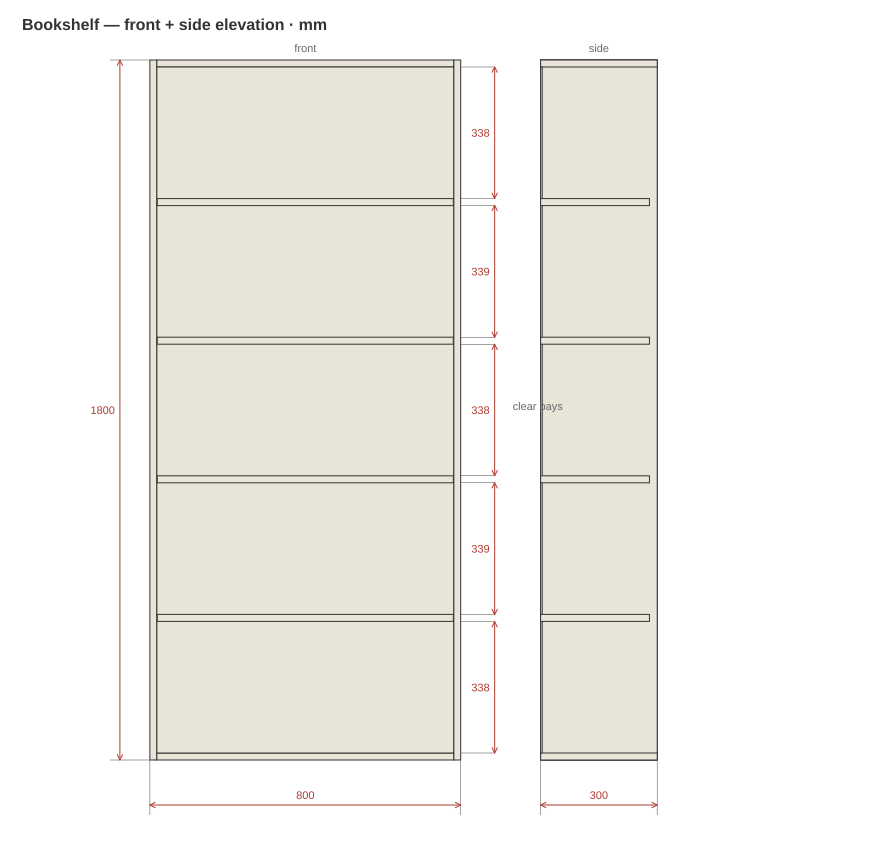
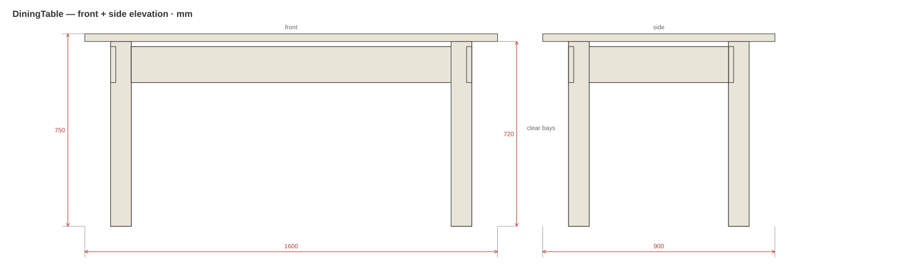
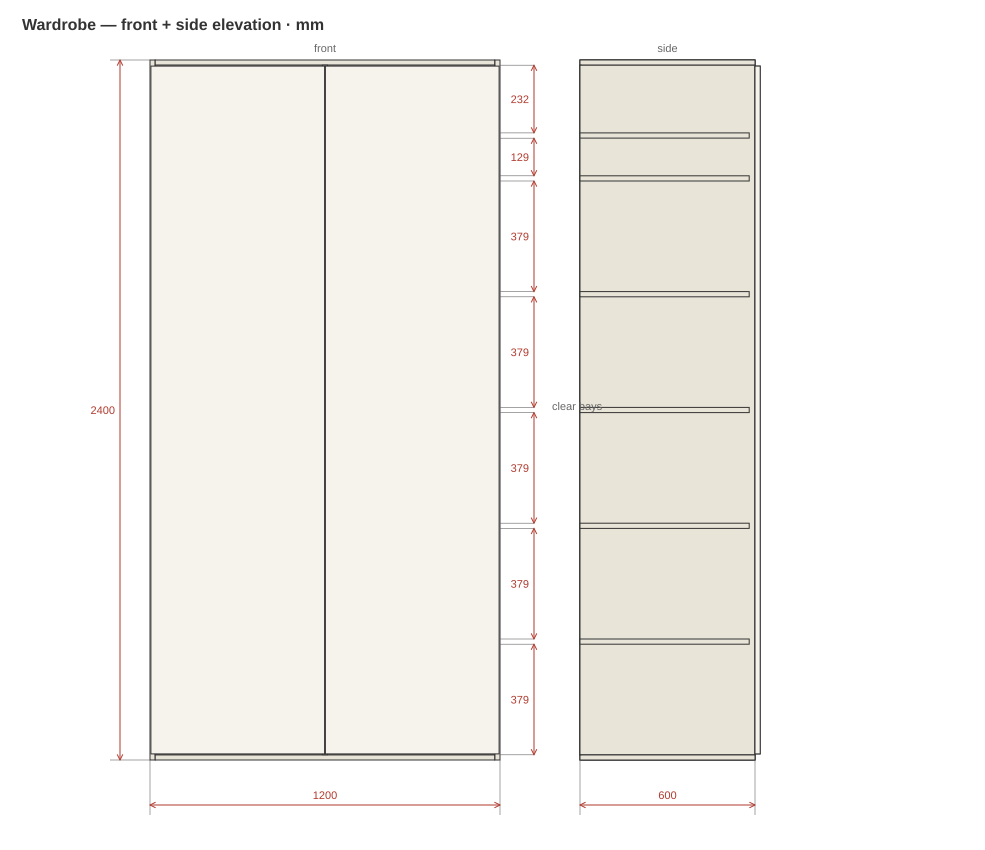

CUT LIST
Validated BOM
Every part with finished L×W×thickness, grain, and banding. Sheet-fit checked, edge-banding totalled. Export md, csv, json, or xlsx.
A skill for Claude that holds your furniture in a disciplined millimetre spec, then emits the whole shop package — cut list, dimensioned drawings, joinery, hardware, a 3D preview, and a real .skp.
Hidden-TV flip-top coffee table · 1260 × 420 × 720 mm
side elevation, lid up 100° · see the full package ↗
Every part with finished L×W×thickness, grain, and banding. Sheet-fit checked, edge-banding totalled. Export md, csv, json, or xlsx.
Plan, front and side elevations with real dimension chains — plus a print-clean packet PDF with a title block.
Per-part hole positions from verified Häfele/Blum data — never guessed. Cam-and-dowel, confirmat, dowels, System-32.
A self-contained three.js render for sign-off — real materials, soft shadows, and open/close toggles for moving parts.
A reachability-sorted, step-by-step plan with the hardware list and tools — out-of-envelope joints flagged, never faked.
With the SketchUp MCP connected, a real editable model built from the same spec — mm converted only at the boundary.
Four pieces run end-to-end through the pipeline. Each folder holds its spec and the whole generated package — drawings, cut list, 3D preview, assembly plan, and packet PDF.

A solid white-oak coffee table that hides a 43″ television under a rear-hinged flip-up top, with two farmhouse drawers underneath.
Every number above comes out of one spec module — the cut list, the drawings, the 3D view and the assembly plan are all derived from it, so none of them can disagree.

The core box-carcass case — sides, top, bottom, inset back, four adjustable shelves.

Out-of-envelope: a leg-and-apron frame placed part-by-part, with the joints flagged for review.

A built-in: centre divider, hanging rod, five shelves, and two overlay doors.
Grab the installable skill, or the whole repo if you want the source and examples too.
Both files unzip to a furniture-design/ folder. Put that folder where Claude looks for skills.
%USERPROFILE%\.claude\skills\furniture-design
~/.claude/skills/furniture-design
Claude Code and Claude Desktop discover skills on startup. Confirm the folder holds SKILL.md at its top level, then reload.
# Claude Code — verify it's discovered claude # then ask: "design me a 900mm oak sideboard"
For the editable .skp, enable the Trimble SketchUp MCP connector. The skill drives it as the 3D backend; everything else works without it. See sketchup-integration.md.
Never derive a real dimension from a photo. Images set style and intent; numbers come from a tape measure or a standard. The skill's whole job is to hold, compute, cross-check, and lay out those numbers — one millimetre spec, every view and the cut list derived from it, nothing hand-patched. Assumed numbers stay flagged until you confirm them.
docs/spec.md → carcass.py → positioned‑part spec → cut list · drawings · assembly · 3D · .skp